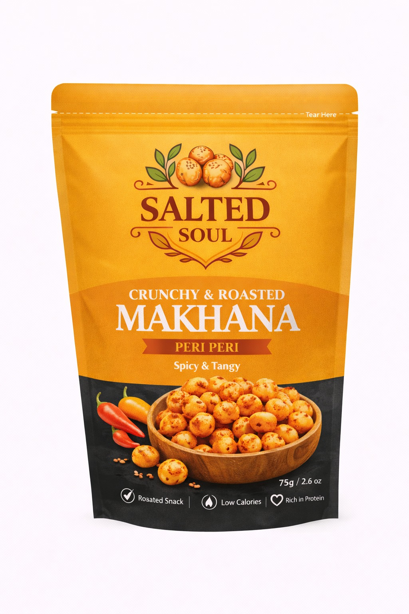

Makhana, edible vegetable oil (sunflower), seasoning (sugar, iodized salt, onion powder, tomato powder), natural spices, chilli, ginger, garlic powder, acidity regulator (INS 330), yeast extract, black salt, lemon powder, flavour enhancers (INS 627, INS 631), anti-caking agent (INS 551).
Peri peri makhana is a light and crunchy snack that is lower in calories compared to deep-fried chips.
It provides protein, fiber, calcium and magnesium which support bone health and overall wellness.
Spices like chilli, ginger and garlic help boost metabolism while tomato and lemon powders provide antioxidants and vitamin C for immunity.